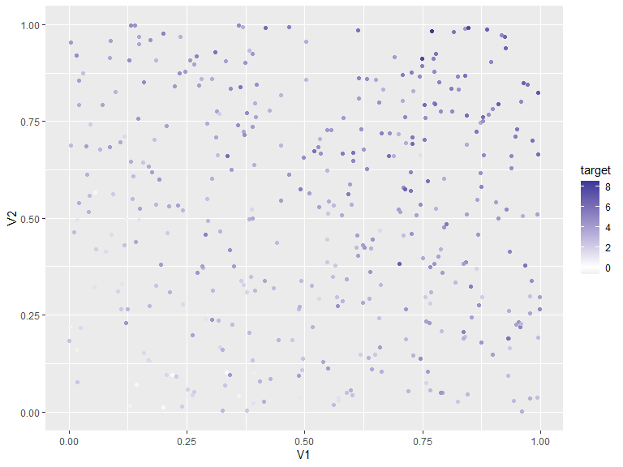
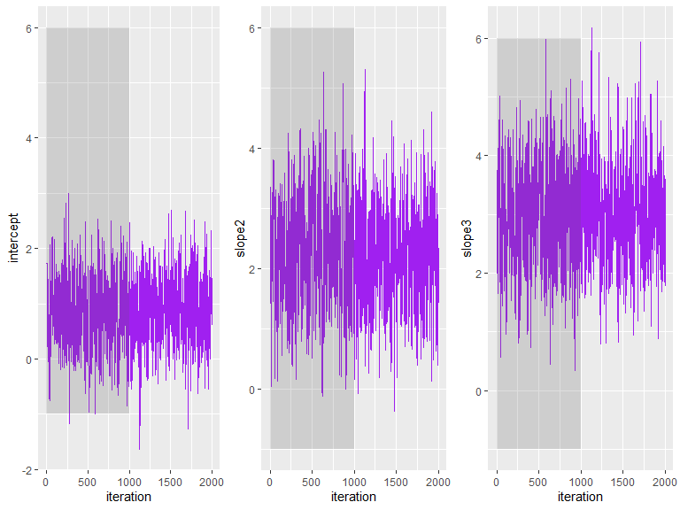
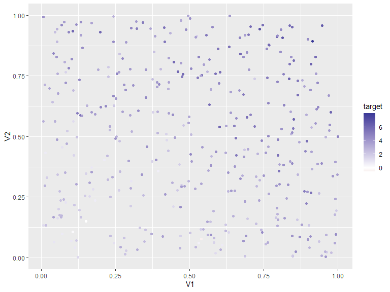
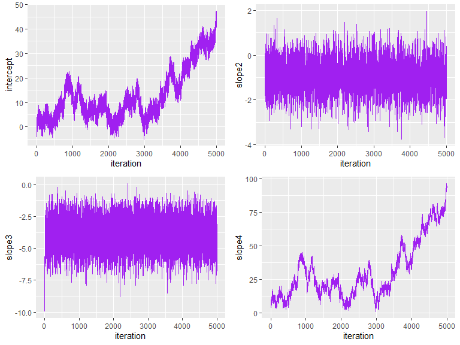
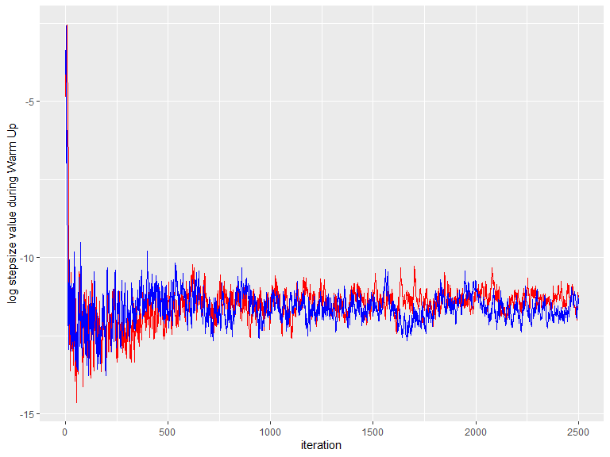
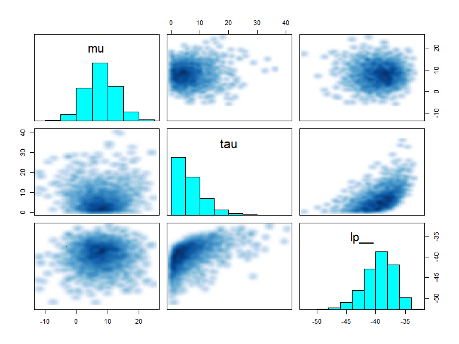

An Introduction to the No U Turn Sampler and dual averaging
Henri Funk
18 12 2020
Hamiltonian Monte Carlo
Idea
- Introduce a momentum \(r_t\) for each component \(\theta_t\)
- update \(\theta\ \& \ r\) simultaneously
- Let the jumping distribution \(J(\cdot)\) be largely determined by \(r\)
\(\Rightarrow\) the resulting algorithm is somewhat a hybrid Monte Carlo with a mix of the known random walk and deterministic simulation methods derived from hamiltonian dynamics
Code - HMC
#' Hamiltonian (hybrid) Monte Carlo
#'
#' @param position_init initial sample
#' @param stepsize length of Leapfrog stepsize
#' @param leapfrogsteps interger; amount of leapfrogsteps
#' @param iterations of HMC algorithm, should be long enough to draw samples from
#'
hamiltonianMC <- function(position_init, stepsize, leapfrogsteps,
iterations, design, target,
is_log = TRUE) {
pb <- txtProgressBar(min = 0, max = iterations, style = 3)
###### Preparation ############################################
# initial position will be our starting value for the algorithm
# positions will be a list containing all of our sampled positions
position <- position_init
positions <- data.frame(matrix(ncol = length(position_init), nrow = iterations))
###### HMC Iteration ###########################################
# For `iteration` steps we do:
# we sample a momentum, combined with the position this will be
# our proposal for Leapfrog Steps
for(iter in seq_len(iterations)) {
momentum <- rnorm(length(position_init))
proposal <- list("position" = position, "momentum" = momentum)
###### Leapfrog Iteration #####################################
# For `leapfrogsteps` steps we do:
# We calculate the partial gradient of our log-posterior at the
# drawn position & recalculate the next proposal by one more
# leapfrogstep
for(step in seq_len(leapfrogsteps)){
args <- if(is.null(design) && is.null(target)) {
list(proposal$position)
} else list(proposal$position, design, target)
gradient_prop <- do.call(gradient, args)
proposal <- leapfrog(proposal$position, proposal$momentum, stepsize, gradient_prop)
}
# Like in Metropolis-Hastings, we compare the (unnormalized) posterior
# density at our proposal with the density at our previously drawn
# position in the ratio of those two estimates, which will form the
# acceptance probability of our drawn proposal
# If excepted we add the proposal to our output positions variable
acceptance <- (joint_probability(proposal$position, proposal$momentum, design = design, target = target, is_log = is_log) /
joint_probability(position, momentum, design = design, target = target, is_log = is_log))
if(is.na(acceptance)) acceptance <- 1
acceptance <- min(1, acceptance)
positions[iter, ] <- position <- if(runif(1) < acceptance) proposal$position else position
setTxtProgressBar(pb, iter)
}
return(positions)
}Problem Feng (2016)
- taking too few or too large steps \(\Rightarrow \ \theta^t\ \& \ \theta^{t+1}\) end up very close.
Desirable behavoir for tuning parameters tuning parameters HMC:
- \(\mathcal{L}\) driving the trajectory of steps in one iteration though the whole posterior space.
Tackeled by NUTS
- \(\epsilon\) getting smaller in areas of high curvature exploiting various areas.
Tackeled by dual averaging
- \(Covar(\phi)\) scaling to the local curvature.
Riemanian Integral
\(\Rightarrow\) All three approaches may be combined. In the following we will discuss the implementation for a No-U-Turn sampler with dual averaging, as discussed in Gelman and Hoffman (2014). Hoffman and Gelman (2014)
The (naive) No-U-Turn Sampler
Heuristic Stopping Criteria
- Lets look at one iteration \(t\) in HMC where we intentionally set
- \(\mathcal{L_t}\) to small
- \(\mathcal{L_t}\) to high
- The \(\mathcal{L_t}\)-Leapfrog steps performed from starting state \((\theta_{right}, r_{right})\) in phase-space to their end \((\theta_{left}, r_{left})\) after \(\mathcal{L_t}\) Leapfrogsteps might look as follows:

Left Plot: Expanding the trajectory in either direction typically extends the trajectory further across the energy level set (grey) towards unexplored neighborhood. Right Plot: Further expansion typically contracts the boundaries of the trajectory towards each other and neighborhoods that have already been explored.
Naive Stepwise Exploration Scheme
- Build a trajectory with a given length
- Check the Termination (No-U-Turn) Criterion
- Expand the trajectory and & Repeat Checks
- Return the sample once the criterion is met
Naive Additive Scheme: Check the termination Criteria for each and every point between any two points Smart
Multiplicative Scheme: Double the trajectory to the old trajectory and so create a balanced binary tree. Compare the criterion only between subtrees.
Doubling- expand the trajectory

Typical doubling proccedure. The initial point is black. Each colour desricbes a new subtree.
The doubling is halted when the sub-trajectories from the leftmost to the rightmost nodes of any balanced binary tree start to double back on themselves.
Info: We have to double fore- and backwards in our trajectory to guarantee reversibility in time
Slice to the Rescue - Valid States

To determine those points we introduce a slice variable \(u\) to our posterior
We sample from \(u \sim Unif(u; [0, e^{\mathcal{L}(\theta_t) - \frac{1}{2} <r_t,r_t>}])\) and for each state \((\hat{\theta}, \hat{r})\) we propose during the next iteration \(t+1\) the unnormalized joint posterior at this point has to be higher than u to be valid.
\((\hat{\theta}, \hat{r})\) is only a valid state if:
\[ u \leq exp(\mathcal{L}(\hat{\theta}) - \frac{1}{2} <\hat{r},\hat{r}>) \]
This is comparable to the acceptance / rejection step in HMC
Alternative: draw from multinomial over states in the trajectory
\(\mathcal{B}, \mathcal{C}\) in NUTS
\(\mathcal{B}\): constituted by all leaves of the binary tree generated in the doubling proccedure of one NUTS iteration. If \(j\) denotes the depth of a tree the amount of visited states through doubling in leapfrog trajectory is \(\#\mathcal{B} = 2^j-1\).
\(\mathcal{C}\): contains all valid states visited.

Example of a trajectory generated during one iteration of NUTS.
Error correction Stopping Criteria
Lets sample a slice using information from the position and momentum sampled in the previous iteration.
The slice helps us to build another stopping criteria. It berries information of the likelihood from our previous iteration, as it is sampled from \(u \sim Unif(u; [0, e^{\mathcal{L}(\theta_t) - \frac{1}{2} <r_t,r_t>}])\). So we can use it to identify errors from our hamiltonian trajectory:
Given a new proposal state \((\hat{\theta}, \hat{r})\) sampled via leapfrogsteps, we stop our doubling, if
\[ \begin{aligned} \mathcal{L}(\hat{\theta}, \hat{r}) - log(u)& < -\Delta_{max} \\ = log(\frac{p(\hat{\theta}, \hat{r})}{u})& < -\Delta_{max} \end{aligned} \] Set \(\Delta_{max}\) to a very high value like 1000. So basically if \(p(\hat{\theta}, \hat{r})\) is the proportional likelihood is way less likely compared to our slice we stop simulating.
Implement NUTS - Initialize
#' Simplified naive U-Turn-Sampler Showcase
#'
#' @param position_init initial value for theta
#' @param stepsize size \epsilon for leapfrog steps
#' @param iteration number of iterations to sample from
#' @param design a design matrix, if posterior is a model
#' @param target a target feature vector if posterior is a model
#' @param is_log if the likelihood is already logged
#'
sample_naiveNUTS_s <- function(position_init, stepsize, iteration, design = NULL, target = NULL, is_log = TRUE) {
###### Preparation ############################################
# initial position will be our starting value for the algorithm
# positions will be a list containing all of our sampled positions
position <- position_init
positions <- data.frame(matrix(ncol = length(position_init), nrow = iteration))
}Implement NUTS - Itertation
#' Simplified naive U-Turn-Sampler Showcase
#'
#' @param position_init initial value for theta
#' @param stepsize size \epsilon for leapfrog steps
#' @param iteration number of iterations to sample from
#' @param design a design matrix, if posterior is a model
#' @param target a target feature vector if posterior is a model
#' @param is_log if the likelihood is already logged
#'
sample_naiveNUTS_s <- function(position_init, stepsize, iteration, design = NULL, target = NULL, is_log = TRUE) {
###### Preparation ############################################
# initial position will be our starting value for the algorithm
# positions will be a list containing all of our sampled positions
position <- position_init
positions <- data.frame(matrix(ncol = length(position_init), nrow = iteration))
###### NUTS Iteration ##########################################
# For `iteration` steps we do:
# we sample a momentum, combined with the position this will be
# our proposal for Leapfrog Steps,
# we initialize `tree_depth` as identifier for the depth and doubling
# we form a slice & sample uniformly from 0 to the joint probability at current
# position and momentum
# we also set up a state that contains information about valid_states
# sampled from Leapfrogsteps, our leftmost and rightmost state of
# our trajectory and 'run' a criterion that tells us if we made the U-turn
# during our last doubling
for(m in 1L:(iteration)) {
momentum <- rnorm(length(position))
slice <- runif(1L, max = exp(joint_probability(position, momentum, design, target)))
state <- initialize_state(position, momentum)
tree_depth <- 0L
}
}Implement NUTS - Doubling the tree
#' Simplified naive U-Turn-Sampler Showcase
#'
#' @param position_init initial value for theta
#' @param stepsize size \epsilon for leapfrog steps
#' @param iteration number of iterations to sample from
#' @param design a design matrix, if posterior is a model
#' @param target a target feature vector if posterior is a model
#' @param is_log if the likelihood is already logged
#'
sample_naiveNUTS_s <- function(position_init, stepsize, iteration, design = NULL, target = NULL, is_log = TRUE) {
###### Preparation ############################################
# initial position will be our starting value for the algorithm
# positions will be a list containing all of our sampled positions
position <- position_init
positions <- data.frame(matrix(ncol = length(position_init), nrow = iteration))
###### NUTS Iteration ##########################################
# For `iteration` steps we do:
# we sample a momentum, combined with the position this will be
# our proposal for Leapfrog Steps,
# we initialize `tree_depth` as identifier for the depth and doubling
# we form a slice & sample uniformly from 0 to the joint probability at current
# position and momentum
# we also set up a state that contains information about valid_states
# sampled from Leapfrogsteps, our leftmost and rightmost state of
# our trajectory and 'run' a criterion that tells us if we made the U-turn
# during our last doubling
for(m in 1L:(iteration)) {
momentum <- rnorm(length(position))
slice <- runif(1L, max = exp(joint_probability(position, momentum, design, target)))
state <- initialize_state(position, momentum)
tree_depth <- 0L
###### Build Tree ##########################################
# While our Leapfrogsteps didn't made a U-Turn we do:
# 1) sample a direction to integrate Leapfrogsteps
# a) foreward in time (+1)
# b) backward in time (-1)
# 2) build a tree in the previously chosen direction
# 3) update our right-/leftmost lepfrog node
# 4) Check if U-Turn was made between
# a) sub trees performed in build tree
# b) the whole tree
while(state$run) {
# 1 means forward, -1 means backward doubling
direction <- sample(c(-1L, 1L), 1L)
state_proposal <- if(direction == -1) {
build_tree(state$leftmost, slice, direction, tree_depth, stepsize = stepsize,
design = design, target = target, is_log = is_log)
} else{
build_tree(state$rightmost, slice, direction, tree_depth, stepsize = stepsize,
design = design, target = target, is_log = is_log)
}
if(state_proposal$run) {
if(direction == -1) {
state$leftmost <- state_proposal$leftmost
state$valid_state <- unite_valid_states(state_proposal, state)
} else{
state$rightmost <- state_proposal$rightmost
state$valid_state <- unite_valid_states(state, state_proposal)
}
}
state$run <- state_proposal$run * is_U_turn(state = state)
tree_depth <- tree_depth + 1
}
}
}Implement NUTS - Sample a state
#' Simplified naive U-Turn-Sampler Showcase
#'
#' @param position_init initial value for theta
#' @param stepsize size \epsilon for leapfrog steps
#' @param iteration number of iterations to sample from
#' @param design a design matrix, if posterior is a model
#' @param target a target feature vector if posterior is a model
#' @param is_log if the likelihood is already logged
#'
sample_naiveNUTS_s <- function(position_init, stepsize, iteration, design = NULL, target = NULL, is_log = TRUE) {
###### Preparation ############################################
# initial position will be our starting value for the algorithm
# positions will be a list containing all of our sampled positions
position <- position_init
positions <- data.frame(matrix(ncol = length(position_init), nrow = iteration))
###### NUTS Iteration ##########################################
# For `iteration` steps we do:
# we sample a momentum, combined with the position this will be
# our proposal for Leapfrog Steps,
# we initialize `tree_depth` as identifier for the depth and doubling
# we form a slice & sample uniformly from 0 to the joint probability at current
# position and momentum
# we also set up a state that contains information about valid_states
# sampled from Leapfrogsteps, our leftmost and rightmost state of
# our trajectory and 'run' a criterion that tells us if we made the U-turn
# during our last doubling
for(m in 1L:(iteration)) {
momentum <- rnorm(length(position))
slice <- runif(1L, max = exp(joint_probability(position, momentum, design, target)))
state <- initialize_state(position, momentum)
tree_depth <- 0L
###### Build Tree ##########################################
# While our Leapfrogsteps didn't made a U-Turn we do:
# 1) sample a direction to integrate Leapfrogsteps
# a) foreward in time (+1)
# b) backward in time (-1)
# 2) build a tree in the previously chosen direction
# 3) update our right-/leftmost lepfrog node
# 4) Check if U-Turn was made between
# a) sub trees performed in build tree
# b) the whole tree
while(state$run) {
# 1 means forward, -1 means backward doubling
direction <- sample(c(-1L, 1L), 1L)
state_proposal <- if(direction == -1) {
build_tree(state$leftmost, slice, direction, tree_depth, stepsize = stepsize,
design = design, target = target, is_log = is_log)
} else{
build_tree(state$rightmost, slice, direction, tree_depth, stepsize = stepsize,
design = design, target = target, is_log = is_log)
}
if(state_proposal$run) {
if(direction == -1) {
state$leftmost <- state_proposal$leftmost
state$valid_state <- unite_valid_states(state_proposal, state)
} else{
state$rightmost <- state_proposal$rightmost
state$valid_state <- unite_valid_states(state, state_proposal)
}
}
state$run <- state_proposal$run * is_U_turn(state = state)
tree_depth <- tree_depth + 1
}
# Use the Transition kernel:
# Sample uniformly one of the valid states drawn through Leapfrog steps
if(is.matrix(state$valid_state$position) ||
is.data.frame(state$valid_state$position)) {
row_id <- sample(seq_len(nrow(state$valid_state$position)), 1L)
positions[m, ] <- state$valid_state$position[row_id, ]
position = as.numeric(positions[m, ])
} else {
positions[m, ] <- position
}
}
positions
}Implement Build Trees - Initialize
#' Build Trees doubles the positions and momentum and such the trajectory length
#'
#' Repeatedly called by NUTS until run == FALSE, that is when a U-Turn is performed.
#'
#' @param position_momentum list, containing actual position and momentum
#' @param slice drawn slice sample to validate position-/momentum steps
#' @param direction determines whether trajectory should explore forwards or backwards
#' @param tree_depth balanced tree depth with momentum and position states in the tree nodes
#' @param is_log logical, indicator if joint probability is already logged
#' @param stepsize parsed stepsize \epsilon to Leapfrog step function
#' @param design design matrix of features for linear modell
#' @param target target variable to validate predictions
#' @param deltamax stop if the error in simulation increases
#' @param run independent argument that tells build tree if stopping criteria is met
#' @param valid_states all valid states visited so far
#'
build_tree_simply <- function(position_momentum, slice, direction, tree_depth,
is_log, stepsize, design = NULL, target = NULL,
deltamax = 1000L, run = 1,
valid_states = structure(vector("list", length = 2L))) {
}Implement Build Trees - Base Case
#' Build Trees doubles the positions and momentum and such the trajectory length
#'
#' Repeatedly called by NUTS until run == FALSE, that is when a U-Turn is performed.
#'
#' @param position_momentum list, containing actual position and momentum
#' @param slice drawn slice sample to validate position-/momentum steps
#' @param direction determines whether trajectory should explore forwards or backwards
#' @param tree_depth balanced tree depth with momentum and position states in the tree nodes
#' @param is_log logical, indicator if joint probability is already logged
#' @param stepsize parsed stepsize \epsilon to Leapfrog step function
#' @param design design matrix of features for linear modell
#' @param target target variable to validate predictions
#' @param deltamax stop if the error in simulation increases
#' @param run independent argument that tells build tree if stopping criteria is met
#' @param valid_states all valid states visited so far
#'
build_tree_simply <- function(position_momentum, slice, direction, tree_depth,
is_log, stepsize, design = NULL, target = NULL,
deltamax = 1000L, run = 1,
valid_states = structure(vector("list", length = 2L))) {
###### Base Case ###########################################
# if tree_depth is zero: Call build leaf,
# take one leapfrog step into direction
if(tree_depth == 0L) {
build_leaf(position_momentum, slice, direction, tree_depth,
stepsize = stepsize, deltamax = deltamax, design = design,
target = target, is_log = is_log)
} else {
}
}Implement Build Leaf
build_leaf_simply <- function(position_momentum, slice, direction, tree_depth,
stepsize, deltamax, design = NULL, target = NULL,
is_log) {
###### Call Gradient #####################################
# We call the posteriors gradient at the current state of
# our position momentum
# In case of a GRM we need to specify design and target
args <- if(is.null(design) && is.null(target)) {
list(position_momentum$position)
} else list(position_momentum$position, design, target)
gradient_step <- do.call(gradient, args)
###### Leapfrog Step ####################################
# From our actual position:
# We do one Leapfrog step to the sampled direction
# This step is largely determined by the gradient
step <- leapfrog(position_momentum$position,
position_momentum$momentum,
stepsize = (direction * stepsize),
gradient = gradient_step)
###### Return State #######################################
# We create a new state containing our leapfrog step as
# rightmost, leftmost and current state
# We calculate the likelihood of our (unnormalized)
# joint probability at our current state
# if this is more likely than the slice drawn from state of
# the previous iteration, current state is assigned as valid state
# Additionally we check if simulation error didn't increase too much
proposal_state <- do.call(initialize_state, step)
proposal_density <- do.call(joint_probability, c(step, design, target,
"is_log" = is_log))
valid <- slice <= exp(proposal_density)
if(valid) proposal_state$valid_state <- step
proposal_state$run <- 0 + (proposal_density > log(slice) - deltamax)
proposal_state
}Implement Build Trees - Doubled Recurion
#' Build Trees doubles the positions and momentum and such the trajectory length
#'
#' Repeatedly called by NUTS until run == FALSE, that is when a U-Turn is performed.
#'
#' @param position_momentum list, containing actual position and momentum
#' @param slice drawn slice sample to validate position-/momentum steps
#' @param direction determines whether trajectory should explore forwards or backwards
#' @param tree_depth balanced tree depth with momentum and position states in the tree nodes
#' @param is_log logical, indicator if joint probability is already logged
#' @param stepsize parsed stepsize \epsilon to Leapfrog step function
#' @param design design matrix of features for linear modell
#' @param target target variable to validate predictions
#' @param deltamax stop if the error in simulation increases
#' @param run independent argument that tells build tree if stopping criteria is met
#' @param valid_states all valid states visited so far
#'
build_tree_simply <- function(position_momentum, slice, direction, tree_depth,
is_log, stepsize, design = NULL, target = NULL,
deltamax = 1000L, run = 1,
valid_states = structure(vector("list", length = 2L))) {
###### Base Case ###########################################
# if tree_depth is zero: Call build leaf,
# take one leapfrog step into direction
if(tree_depth == 0L) {
build_leaf(position_momentum, slice, direction, tree_depth,
stepsize = stepsize, deltamax = deltamax, design = design,
target = target, is_log = is_log)
} else {
###### Recursion ###########################################
# Recursion- build left/right subtrees
# Call build_tree at tree_depth - 1 twice
# leapfrogsteps will get called 2^treedepth times
state <- build_tree(position_momentum, slice, direction, tree_depth - 1L,
stepsize = stepsize, deltamax = deltamax, design = design,
target = target, is_log = is_log, run = run,
valid_states = valid_states)
# After calling the second build_tree, assign depending on
# direction left or rightmost node to state, which will be returned
if(direction == -1L) {
state1 <- build_tree(state$leftmost, slice, direction, tree_depth - 1L,
stepsize = stepsize, deltamax = deltamax, design = design,
target = target, is_log = is_log, run = run,
valid_states = valid_states)
state$leftmost <- state1$leftmost
} else {
state1 <- build_tree(state$rightmost, slice, direction, tree_depth - 1L,
stepsize = stepsize, deltamax = deltamax, design = design,
target = target, is_log = is_log, run = run,
valid_states = valid_states)
state$rightmost <- state1$rightmost
}
}
}Example - Recursion with tree_depth = 3
Implement Build Trees - Update State
#' Build Trees doubles the positions and momentum and such the trajectory length
#'
#' Repeatedly called by NUTS until run == FALSE, that is when a U-Turn is performed.
#'
#' @param position_momentum list, containing actual position and momentum
#' @param slice drawn slice sample to validate position-/momentum steps
#' @param direction determines whether trajectory should explore forwards or backwards
#' @param tree_depth balanced tree depth with momentum and position states in the tree nodes
#' @param is_log logical, indicator if joint probability is already logged
#' @param stepsize parsed stepsize \epsilon to Leapfrog step function
#' @param design design matrix of features for linear modell
#' @param target target variable to validate predictions
#' @param deltamax stop if the error in simulation increases
#' @param run independent argument that tells build tree if stopping criteria is met
#' @param valid_states all valid states visited so far
#'
build_tree_simply <- function(position_momentum, slice, direction, tree_depth,
is_log, stepsize, design = NULL, target = NULL,
deltamax = 1000L, run = 1,
valid_states = structure(vector("list", length = 2L))) {
###### Base Case ###########################################
# if tree_depth is zero: Call build leaf,
# take one leapfrog step into direction
if(tree_depth == 0L) {
build_leaf(position_momentum, slice, direction, tree_depth,
stepsize = stepsize, deltamax = deltamax, design = design,
target = target, is_log = is_log)
} else {
###### Recursion ###########################################
# Recursion- build left/right subtrees
# Call build_tree at tree_depth - 1 twice
# leapfrogsteps will get called 2^treedepth times
state <- build_tree(position_momentum, slice, direction, tree_depth - 1L,
stepsize = stepsize, deltamax = deltamax, design = design,
target = target, is_log = is_log, run = run,
valid_states = valid_states)
# After calling the second build_tree, assign depending on
# direction left or rightmost node to state, which will be returned
if(direction == -1L) {
state1 <- build_tree(state$leftmost, slice, direction, tree_depth - 1L,
stepsize = stepsize, deltamax = deltamax, design = design,
target = target, is_log = is_log, run = run,
valid_states = valid_states)
state$leftmost <- state1$leftmost
} else {
state1 <- build_tree(state$rightmost, slice, direction, tree_depth - 1L,
stepsize = stepsize, deltamax = deltamax, design = design,
target = target, is_log = is_log, run = run,
valid_states = valid_states)
state$rightmost <- state1$rightmost
}
###### Return State #######################################
# Check if any stopping criteria was met during recursion
# update valid states by unioning states from both build
# tree calls
run <- run * state1$run * state$run * is_U_turn(state)
state$run <- run
valid_states$position <- rbind(valid_states$position,
state$valid_state$position,
state1$valid_state$position)
valid_states$momentum <- rbind(valid_states$momentum,
state$valid_state$momentum,
state1$valid_state$momentum)
state$valid_state$position <- valid_states$position
state$valid_state$momentum <- valid_states$momentum
return(state)
}
}The efficient No-U-Turn Sampler
Problems of naive NUTS
Recall the example trajectory:
Example of a trajectory generated during one iteration of NUTS.
- Problem 1: waste of posterior and gradient computations
- Problem 2: large amount of memory: Storing \(2^j\) position-momentum states
- Problem 3: if stopping is met in the middle of a run there is no need for further evaluations
Efficient NUTS - a solution
Idea:
Therefore sample from \(\mathcal{C}\) incrementally by its subtrees
Quit early if any stopping criteria is met
For each subtree \(\mathcal{B_{st}}\) in \(\mathcal{B}\):
- sample a valid state \((\theta, r) \in \mathcal{C_{st}}\) as representee
- choose a pair by giving them a weight proportional to their subtrees element size
this method…
\(\Rightarrow\) stores only \(\mathcal{O}(j)\) position momentum vectors and
\(\Rightarrow\) is sparse at calculating the gradient as build tree can be canceled early if U-turn was made
Differences to naive NUTS
| name | logo |
|---|---|
| Dif NUTS |

|
| Dif build_tree |

|
| Dif build leaf |

|
No-U-Turn Sampler with dual averaging

Intuition
- Acceptance probability for this, would be one if we could exactly run the hamiltonian dynamics as it drives us towards lower density regions.
\(\Rightarrow\) Essentially, this acceptance probability is related to how good the numerical approximation of Leapfrogsteps to the Hamiltonian dynamics is.
- Then, we balance the tradeoff between the error and the time it takes to generate any given sample by varying \(\delta\) either spend more time generating better approximations of the Hamiltonian-dynamics, or alternately spend less time generating crappier ones knowing that we will throw more away.
Adaptively tuning the stepsize
Idea: Find a stepsize \(\epsilon\) in a Warm-Up Phase that guarantees quick convergence Set this value in a Stationary Phase to make the algorithm converge
Suppose we aim for a target average acceptance probability \(\delta (= 0.65)\).
Suppose our average acceptance at iteration t is \(\alpha_t\)
Let \(H_t = \delta - \alpha_t\) then be our MCMC behavior at iteration t
Goal: reach \(H_t \approx 0\)
Update \(\epsilon\) as follows:
\(\epsilon_{t+1} =\epsilon_t - \eta_tH_t, \ \eta_t \in (0,1]\)
If acceptance \(\alpha_t\) was to high we encourage the algorithm for larger jumps, rising \(\epsilon_{t+1}\)
If acceptance \(\alpha_t\) was to low we encourage the algorithm for smaller jumps, decreasing \(\epsilon_{t+1}\)
Dual Averaging
Problem: Usually parameters are quite different between Warm-Up and Stationary phase.
\(\Rightarrow\) We want the stepsize to adapt quickly as we shift from Warm-Up to stationary Phase
\[ H^t = (1 - \frac{1}{t_0 + t}) H^{t-1} + \frac{1}{t_0 + t} (\delta - \frac{\alpha}{n_{\alpha}})\\ log(\epsilon^t) = \mu - \frac{\sqrt{t}}{\gamma} H^t \\ log(\overline{\epsilon}^t) =t^{-\kappa} \epsilon^t + (1-t^{-\kappa}) \overline{\epsilon}^{t-1} \]
- \(t\) is the iteration we are at
- \(t_0\) stabilizes \(H^t\) in early iterations (default: 10L)
- \(\epsilon^t\) epsilon at itaeration t (this is the next iteration here)
- \(\mu\) freely choosen value where we shrink towards (default: \(log(10\epsilon^1)\), which encourages the algorithm for larger \(\epsilon\))
- \(\gamma\) controls the amount of shrinkage (default: 0.05)
- \(t^{-\kappa}\) stepsize schedual: increases the influence of more recent iterations
We use \(\epsilon^t\) in Warm-Up phase for \(M_{adapt}\) iterations, and \(\overline{\epsilon}^{M_{adapt}}\) for the stationary phase.
\(\epsilon^t\) allows the algorithm in Warm Up Phase to adapt quickly
\(\overline{\epsilon}^{M_{adapt}}\) ensures a stable stepsize in stationary phase that favors more recent iterations from Warm Up phase
Dual Averaging in NUTS
Problem: As NUTS has no clarified acceptance/rejection step we need to specify this step on our own
So we have to recalculate acceptance:
\[ \begin{aligned} \alpha_t^{NUTS} & = \frac{1}{|\mathcal{B_t^{final}}|}\sum_{(\theta, r) \in \mathcal{B_t^{final}}} min(1, \frac{p(\theta, r)}{p(\theta^{t-1}, r^{t-1})}) \end{aligned} \]
Integration in build_leaf:
# ______________________________________________________________________________
#' Build One Tree
#'
#' Builds one tree doing a leapfrogstep in one direction
#'
#' @inheritParams build_tree
build_leaf <- function(position_momentum, slice, direction, tree_depth, stepsize, deltamax,
design = NULL, target = NULL, iter = NULL, is_log) {
args <- if(is.null(design) && is.null(target)) {
list(position_momentum$position)
} else list(position_momentum$position, design, target)
gradient_step <- do.call(gradient, args)
step <- leapfrog(position_momentum$position, position_momentum$momentum,
stepsize = (direction * stepsize), gradient = gradient_step)
proposal_state <- do.call(initialize_state, c(step, "efficient" = !is.null(iter)))
proposal_density <- do.call(joint_probability, c(step, list(design), list(target), "is_log" = is_log))
valid <- slice <= exp(proposal_density)
if(!is.null(iter)) {
proposal_state$count <- as.numeric(valid)
quotient_lik <- exp(proposal_density - do.call(joint_probability, c(iter, list(design), list(target), "is_log" = is_log)))
proposal_state$acceptance$acceptance <- min(1, quotient_lik)
proposal_state$valid_state <- step
}
proposal_state$run <- if(slice > 0) 0 + (exp(proposal_density + deltamax) > slice) else 1
proposal_state
}Find initial stepsize
- Dual averaging works for any given starting value \(\epsilon_1\)
- However we can speed up convergence by choosing a propper \(\epsilon_1\)
- We constantly double/halve proposal \(\epsilon_1\) until the acceptance rate of our proposal crosses 0.5 or 2
- For low exceptance we encourage the algorithm for small cautious steps
- For high exceptance we encourage the algorithm for large ambitious steps
#' Find A Reasonable initial value for stepsize parameter
#'
#' supplement to dual averaging to speed up convergence by initializing a reasonable stepsize via heuristic
#'
#' @inheritParams nouturn_sampler
find_initial_stepsize <- function(position_init, design = NULL, target = NULL, is_log) {
stepsize <- 1
momentum <- rnorm(length(position_init))
args <- if(is.null(design) && is.null(target)) {
list("pos" = position_init)
} else list("pos" = position_init, "des" = design, "tar" = target)
gradient_step <- do.call(gradient, args)
proposal <- leapfrog(position_init, momentum, stepsize, gradient_step)
exponent <- 2 * (acceptance_rate(args, momentum, proposal, is_log) > 0.5) - 1
while(acceptance_rate(args, momentum, proposal, is_log)^exponent > 2^(-exponent)) {
stepsize <- stepsize * 2^exponent
proposal <- leapfrog(position_init, momentum, stepsize, gradient_step)
}
stepsize
}
# ______________________________________________________________________________
acceptance_rate <- function(args, momentum, proposal, is_log) {
proposal_dens <- joint_probability(proposal[[1]], proposal[[2]], args$des, args$tar, is_log)
initial_dens <- joint_probability(args$pos, momentum, args$des, args$tar, is_log)
exp(proposal_dens - initial_dens)
}Implement efficient NUTS with dual averaging
#' Efficient No-UTurn
#'
#' Efficient No-U-turn Sampler, implemented by Gelman et al. 2013
#' it is possible to determine stepsize by dual averaging
#'
#' @inheritParams naive_nouturn_sampler
#' @param adaption iterations where stepsize is adapted. Must be smaller than iterations.
#' @param target_accpentance targeted average acceptance rate of proposals
#'
sample_noUturn_s <- function(position_init, iteration,
adaption = 0.5 * iteration, target_accpentance = 0.65,
design = NULL, target = NULL, is_log = TRUE, max_tree_depth = 10L) {
stepsize <- find_initial_stepsize(position_init, design, target, is_log)
duala_params <- init_parmeters(stepsize)
position <- position_init
positions <- data.frame(matrix(ncol = length(position_init), nrow = iteration))
for(m in seq_len(iteration)) {
momentum <- rnorm(length(position))
iter <- list("position" = position, "momentum" = momentum)
slice <- runif(1L, max = exp(joint_probability(position, momentum, design,
target, is_log = is_log)))
# Initialize state to call on Build Tree
state <- initialize_state(position, momentum, efficient = TRUE)
state$count <- 1
tree_depth <- 0L
while(state$run) {
# 1 means forward, -1 means backward doubling
direction <- sample(c(-1L, 1L), 1L)
if(direction == -1) {
state_proposal <- build_efficient_tree(state$leftmost, slice, direction,
tree_depth, stepsize = stepsize, design = design,
target = target, is_log = is_log, iter = iter)
state$leftmost <- state_proposal$leftmost
} else{
state_proposal <- build_efficient_tree(state$rightmost, slice, direction,
tree_depth, stepsize = stepsize, design = design,
target = target, is_log = is_log, iter = iter)
state$rightmost <- state_proposal$rightmost
}
if(state_proposal$run) {
rate <- min(state_proposal$count / state$count, 1)
if(rbinom(n = 1, size = 1, prob = rate)) state$valid_state <- state_proposal$valid_state
}
state$count <- state_proposal$count + state$count
state$run <- state_proposal$run * is_U_turn(state = state)
if(tree_depth > max_tree_depth){
warning("NUTS: Reached max tree depth")
break
}
tree_depth <- tree_depth + 1
}
if(m <= adaption) {
duala_params <- update_stepsize(duala_params, m, target_accpentance,
state_proposal$acceptance$acceptance / state_proposal$acceptance$nacceptance)
stepsize <- duala_params$stepsize[m + 1]
}
if(m == adaption) {
stepsize <- duala_params$stepsize_weight[m + 1]
}
tree_depths[m] <- tree_depth - 2L
if(!is.null(state$valid_state$position)) position <- as.numeric(state$valid_state$position)
positions[m, ] <- position
}
structure(positions, "tree_depth" = tree_depths,
"dual_averaging" = duala_params)
}Build efficient tree and leaves
build_efficient_tree_simply <- function(position_momentum, slice, direction, tree_depth,
iter, is_log, stepsize, design = NULL, target = NULL, deltamax = 1e50,
run = 1, count = 0, acceptance = 0, nacceptance = 0) {
if(tree_depth == 0L) {# Basecase - take one leapfrogstep into direction
build_leaf(position_momentum, slice, direction, tree_depth, stepsize, deltamax,
design = design, target = target, iter = iter, is_log = is_log)
} else {# Recursion- build left/right subtrees
state <- build_efficient_tree(position_momentum, slice, direction, tree_depth - 1L,
stepsize = stepsize, deltamax = deltamax, design = design,
target = target, is_log = is_log, iter = iter,
run = run, count = count,
acceptance = acceptance, nacceptance = nacceptance)
if(state$run){
if(direction == -1L) {
state1 <- build_efficient_tree(state$leftmost, slice, direction, tree_depth - 1L,
stepsize = stepsize, deltamax = deltamax, design = design,
target = target, is_log = is_log, iter = iter,
run = run, count = count,
acceptance = acceptance, nacceptance = nacceptance)
state$leftmost <- state1$leftmost
position_momentum <- state1$valid_state
} else {
state1 <- build_efficient_tree(state$rightmost, slice, direction, tree_depth - 1L,
stepsize = stepsize, deltamax = deltamax, design = design,
target = target, is_log = is_log, iter = iter,
run = run, count = count,
acceptance = acceptance, nacceptance = nacceptance)
state$rightmost <- state1$rightmost
position_momentum <- state1$valid_state
}
rate <- state1$count / (state1$count + state$count)
if(!is.na(rate) && runif(1) <= rate) state$valid_state <- position_momentum
# if any state is 0 Stopping criteria is triggered for trajectory iterations
run <- run * state1$run * is_U_turn(state)
count <- count + state$count + state1$count
acceptance <- acceptance + state$acceptance$acceptance + state1$acceptance$acceptance
nacceptance <- nacceptance + state$acceptance$nacceptance + state1$acceptance$nacceptance
state$run <- run
state$count <- count
state$acceptance$acceptance <- acceptance
state$acceptance$nacceptance <- nacceptance
}
return(state)
}
}
# ______________________________________________________________________________
#' Build One Tree
#'
#' Builds one tree doing a leapfrogstep in one direction
#'
#' @inheritParams build_tree
build_leaf_simply <- function(position_momentum, slice, direction, tree_depth, stepsize, deltamax,
design = NULL, target = NULL, iter = NULL, is_log) {
args <- if(is.null(design) && is.null(target)) {
list(position_momentum$position)
} else list(position_momentum$position, design, target)
gradient_step <- do.call(gradient, args)
step <- leapfrog(position_momentum$position, position_momentum$momentum,
stepsize = (direction * stepsize), gradient = gradient_step)
proposal_state <- do.call(initialize_state, c(step, "efficient" = !is.null(iter)))
proposal_density <- do.call(joint_probability, c(step, list(design), list(target), "is_log" = is_log))
valid <- slice <= exp(proposal_density)
if(!is.null(iter)) {
proposal_state$count <- as.numeric(valid)
quotient_lik <- exp(proposal_density - do.call(joint_probability, c(iter, list(design), list(target), "is_log" = is_log)))
proposal_state$acceptance$acceptance <- min(1, quotient_lik)
proposal_state$valid_state <- step
}
proposal_state$run <- 0 + (exp(proposal_density + deltamax) > slice)
proposal_state
}Summarize NUTS
The sampling procedure is summarized as follows:- Set the initial value of \(theta\), \(\epsilon\) and values of \(\delta\) \(t_0\), \(\mu\), \(\gamma\) \(-\kappa\)
- Generate momentum \(r_0\) from the standard normal distribution r∼N(0,I).
- Generate slice variable u from the uniform distribution \(s∼Uniform(0,exp(logf(\theta)−\frac{1}{2}r^Tr))\).
- Generate valid states \(\mathcal{C}\) by using the doubling method and sample a proposal \((\hat{\theta},\hat{r})\) iteratively
- Accept the proposal \((\hat{\theta},\hat{r})\) with probability proportional to the valid_set size.
- Update \(\epsilon^t\) by dual averaging.
- Repeat steps 2 to 6, step 6 is repeated only during the warm-up phase.
see Nishio and Arakawa (2019)
Examples

Regression - an artificial data set
Generate data:
design <- cbind(1, sapply(1:2, function(x) runif(400)))
perfect_position <- c(1,2,3)
target <- design %*% perfect_position + rnorm(400)Take a look at the data:

Regression - Set Up NUTS
Regression - Trace Plot for parameters

Regression - Autocorrelation

Classification - Endometrial data Set
- Goal: Predict whether a person has endometrial cancer or not.
Dataset: A data frame with 79 rows and 4 variables:
NV Neovasculation risk factor indicator (0=Absent, 1=Present)
PI Pulsatility index of arteria uterina
EH Endometrium height
- We standardize the data to get an estimates independent from their scale.
Classification - Define posterior and gradient function
\[ \begin{aligned} f(\mathbf{y} | \mathbf{X},\boldsymbol\beta) &= \prod_{i=1}^n p^{y_i} (1-p)^{1-y_i}, \\ &= \prod_{i=1}^{n} \left(\frac{1}{1+e^{-\mathbf{x}i^T\boldsymbol\beta}}\right)^{y_i} \left(\frac{e^{-\mathbf{x}_i^T\boldsymbol\beta}}{1+e^{-\mathbf{x}_i^T\boldsymbol\beta}}\right)^{1-y_i}, \\ \log f(\mathbf{y} | \mathbf{X}, \boldsymbol\beta) &= \sum{i=1}^n -y_i\log(1+e^{-\mathbf{x}i^T\boldsymbol\beta}) + (1-y_i)(-\mathbf{x}_i\boldsymbol\beta - \log(1+e^{-\mathbf{x}_i^T\boldsymbol\beta})), \\ &= \sum{i=1}^n -\log(1+e^{-\mathbf{x}i\boldsymbol\beta}) - \mathbf{x}_i^T\boldsymbol\beta(1 - y_i), \\ &= \sum{i=1}^n \mathbf{x}_i^T\boldsymbol\beta(y_i - 1) - \log(1 + e^{-\mathbf{x}_i^T\boldsymbol\beta}), \\ &= \boldsymbol\beta^T\mathbf{X}^T(\mathbf{y} - \mathbf{1}_n) - \mathbf{1}_n^T [ \log( 1 + e^{-\mathbf{X}\boldsymbol\beta})]. \end{aligned} \]
We set a multivariate normal prior for \(\boldsymbol\beta\)
\[ \begin{aligned} \boldsymbol\beta &\sim N(0, \sigma^2 \mathbf{I}), \end{aligned} \]
with pdf, omitting constants
\[ \begin{aligned} \pi(\boldsymbol\beta | \sigma^2) &= \frac{1}{\sqrt{\lvert 2\pi \sigma^2 \rvert }}e^{-\frac{1}{2}\boldsymbol\beta^T \boldsymbol\beta / \sigma^2}, \\ \log \pi(\boldsymbol\beta | \sigma^2) &= -\frac{1}{2}\log(2\pi \sigma^2) - \frac{1}{2}\boldsymbol\beta^T \boldsymbol\beta / \sigma^2, \\ &\propto -\frac{1}{2}\log \sigma^2 - \frac{\boldsymbol\beta^T\boldsymbol\beta}{2\sigma^2}. \end{aligned} \]
Classification - Define posterior and gradient function II
Next, we derive the log posterior, omitting constants,
\[ \begin{aligned} f(\boldsymbol\beta | \mathbf{X}, \mathbf{y}, \sigma^2) &\propto f(\mathbf{y} | \mathbf{X}, \boldsymbol\beta) \pi(\boldsymbol\beta | \sigma^2), \\ \log f(\boldsymbol\beta | \mathbf{X}, \mathbf{y}, \sigma^2) & \propto \log f(\mathbf{y} | \mathbf{X}, \boldsymbol\beta) + \log \pi(\boldsymbol\beta|\sigma^2), \\ &\propto \sum_{i=1}^n \mathbf{x}i^T\boldsymbol\beta(y_i - 1) - \log(1 + e^{-\mathbf{x}_i^T\boldsymbol\beta}) - \frac{1}{2}\boldsymbol\beta^T\boldsymbol\beta / \sigma^2, \\ &\propto \boldsymbol\beta^T\mathbf{X}^T(\mathbf{y} - \mathbf{1}n) - \mathbf{1}_n^T[\log( 1 + e^{-\mathbf{X}\boldsymbol\beta})] - \frac{\boldsymbol\beta^T\boldsymbol\beta}{2\sigma^2}. \end{aligned} \]
Next, we need to derive the gradient of the log posterior for the leapfrog function
\[ \begin{aligned} \nabla_{\boldsymbol\beta} \log f(\boldsymbol\beta, \mathbf{X}, \mathbf{y}, \sigma^2) &\propto \mathbf{X}^T \left ( \mathbf{y} - \mathbf{1}n+ \frac{e^{-\mathbf{X}\boldsymbol\beta}}{1 + e^{-\mathbf{X}\boldsymbol\beta}}\right) - \boldsymbol\beta / \sigma^2 \end{aligned} \] Thomas and Tu (2020)
Classification - Run HMC
hmc <- hamiltonianMC(runif(4, -5, 5), iterations = 5e3,stepsize = 0.1, leapfrogsteps = 10, design = X, target = y)
Classification - Run NUTS
Run sample_noUturn for 5000 iterations with a small target acceptance of 0.39 As our posterior is already logged we ca specify the is_logged argument as TRUE
We use a weak prior where \(\sigma^2I = 200I\), this is analog t a very week penalty.
- This took 24 hours of calculation, plus preparation.
Trace the run

Sationary log-epsilon after adaptive Warm Up:
## [1] -11.32922 -11.64710Classification - Check Convergence by Traceplots

Classification - Check Convergence by Density Plots

Classification - Prediction and Comparison
Lets compare our models mean parameter Estimators to those of a GLM
| intercept | slope1 | slope2 | slope3 | |
|---|---|---|---|---|
| Sample1 | 2.18 | -0.32 | -1.93 | 6.74 |
| Sample2 | 0.73 | -0.23 | -2.02 | 4.22 |
| Sample3 | 1.06 | -0.41 | -2.05 | 4.47 |
| Sample4 | 0.96 | -0.37 | -2.30 | 4.69 |
| regularized GLM | 0.87 | -0.31 | -1.80 | 4.14 |
Presettings
Loading the package
To estimate your model in parallel
Automatically save a bare version of a compiled Stan program to the hard disk so that it does not need to be recompiled
You will need to run these commands each time you load the rstan library.
Example Eight Schools - SetUp
This is an example in Section 5.5 of Gelman et al. (2013), which studied coaching effects from eight schools.
We start by writing a Stan program for the model in a text file. If you are using RStudio click on File -> New File -> Stan File . Either way, paste in the following and save your work to a file called schools.stan in R’s working directory.
// saved as schools.stan
data {
int<lower=0> J; // number of schools
real y[J]; // estimated treatment effects
real<lower=0> sigma[J]; // standard error of effect estimates
}
parameters {
real mu; // population treatment effect
real<lower=0> tau; // standard deviation in treatment effects
vector[J] eta; // unscaled deviation from mu by school
}
transformed parameters {
vector[J] theta = mu + tau * eta; // school treatment effects
}
model {
target += normal_lpdf(eta | 0, 1); // prior log-density
target += normal_lpdf(y | theta, sigma); // log-likelihood
}
In this Stan program, we let theta be a transformation of mu, eta, and tau instead of declaring theta in the parameters block, which allows the sampler will run more efficiently (see detailed explanation). We can prepare the data (which typically is a named list) in R with:
Example Eight Schools - Run
schools_dat <- list(J = 8,
y = c(28, 8, -3, 7, -1, 1, 18, 12),
sigma = c(15, 10, 16, 11, 9, 11, 10, 18))And we can get a fit with the following R command. Note that the argument to file = should point to where the file is on your file system unless you have put it in the working directory of R in which case the below will work.
The object fit, returned from function stan is an S4 object of class stanfit.
Example Eight Schools - Evaluate
Methods such as print, plot, and pairs are associated with the fitted result so we can use the following code to check out the results in fit. print provides a summary for the parameter of the model as well as the log-posterior with name lp__ (see the following example output). For more methods and details of class stanfit, see the help of class stanfit. We can use the extract function on stanfit objects to obtain the samples.
print(fit)
plot(fit)
la <- extract(fit, permuted = TRUE) # return a list of arrays
mu <- la$mu
### return an array of three dimensions: iterations, chains, parameters
a <- extract(fit, permuted = FALSE)
### use S3 functions on stanfit objects
a2 <- as.array(fit)
m <- as.matrix(fit)
d <- as.data.frame(fit)Example Eight Schools - Plot Distributions

References
Feng, Chi. 2016. “MCMC Demo.” GitHub Repository. https://github.com/chi-feng/mcmc-demo; GitHub.
Gelman, Andrew, John B Carlin, Hal S Stern, David B Dunson, Aki Vehtari, and Donald B Rubin. 2013. Bayesian Data Analysis. CRC press.
Hoffman, Matthew D, and Andrew Gelman. 2014. “The No-U-Turn Sampler: Adaptively Setting Path Lengths in Hamiltonian Monte Carlo.” J. Mach. Learn. Res. 15 (1): 1593–1623.
Nishio, Motohide, and Aisaku Arakawa. 2019. “Performance of Hamiltonian Monte Carlo and No-U-Turn Sampler for Estimating Genetic Parameters and Breeding Values.” Genetics Selection Evolution 51 (1): 73.
Thomas, Samuel, and Wanzhu Tu. 2020. “Learning Hamiltonian Monte Carlo in R.” arXiv Preprint arXiv:2006.16194.